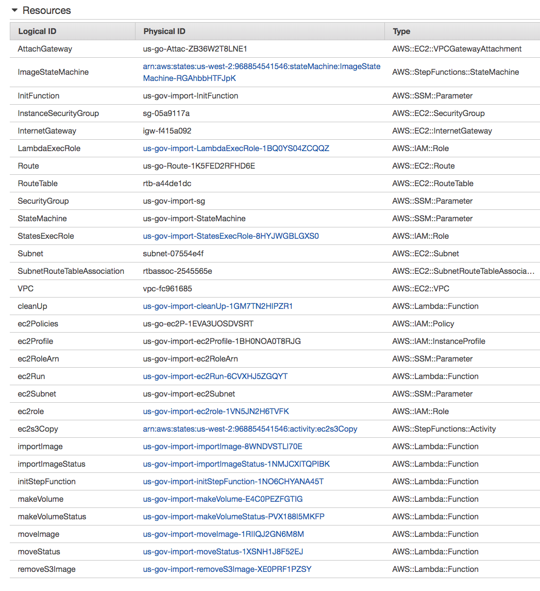
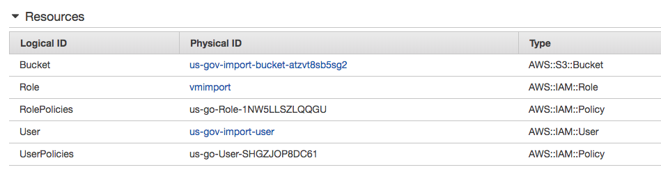
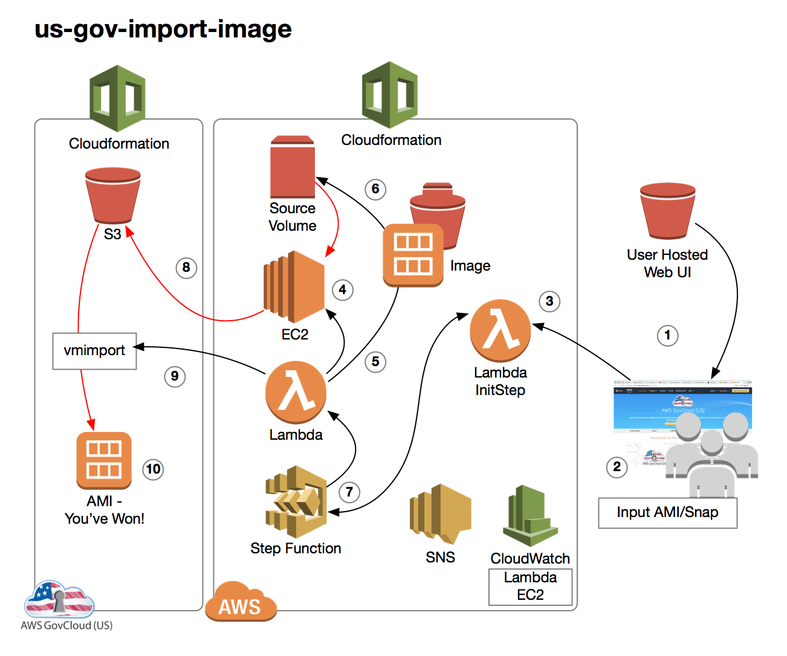
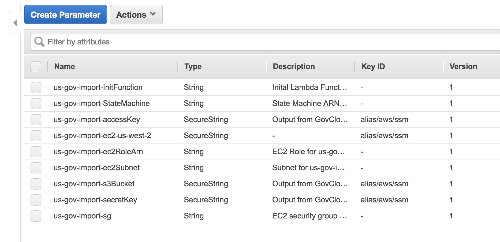
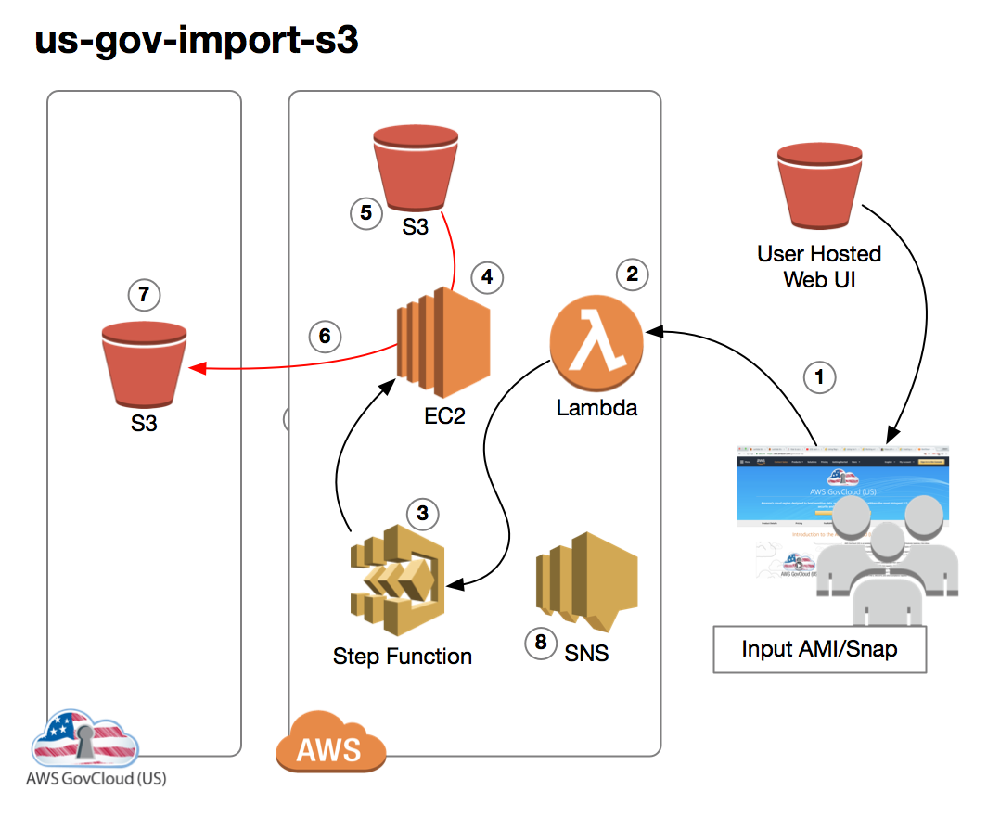

Please verify: Any previous installs have been removed & vmimport role has been removed from AWS GovCloud (US).
Launch a small ec2 instance and run this install script. Admin API Keys are needed for
AWS and AWS GovCloud (US). The script will output a URL for app UI. Please read through all documentation
prior to installation.
Uninstall
Please verify: Any objects that are left in S3 AWS GovCloud (US) and AWS Buckets are removed. Once verified,
proceed to the install/remove page. You need Admin API Keys for AWS and AWS GovCloud (US). All is removed but
the cloudwatch logs.
Caveats:
1. Install fails if vmimport role exists or leftovers from previous install.
2. Uninstall fails if S3 bucket objects exist or additional .
3. Window images loose .pem login functionality(not linux in tests). Make sure creds set.
4. No images over 100GiB(Tested up to this size).
5. S3 Import is meant for 1TiB or less.
6. S3 Import fails without giving specific S3 Bucket permissions to AWS role or AWS GovCloud (US) user.
Programatic Interface(API):
While this is not a full API, it will allow you to make gov-cloud-import available to your applications.
Below are sample AWS SDK Javascript calls that show how to initiate an import.
We have a CloudFormation for AWS and AWS GovCloud (US). The installation script deploys these formations
Below should help reference what is being built by the templates.
For AWS:

For AWS GovCloud (US):

After depolyed, you then have the ability to transfer AMI/Snapshots via the import images and S3 buckets via Import S3.
Solution: gov-cloud-import-image
This gov-cloud-import-image tool supports importing Snapshots/AMIs owned by your AWS account.

1. User inputs Source OS, AMI/Snapshot ID, and Region
2. Lambda starts Step Functions and passes input
3. Step Functions starts/launches EC2 Worker
4. Lambda copies the Source Image to region adjacent to AWS GovCloud (US)
5. Makes Volume from copied Image and attach to EC2
6. Step Functions issues an EC2 Activity
7. EC2 Worker copies RAW image to AWS GovCloud (US) S3 Bucket
There is no script specific to SSM. The unencrypted values are sent from the AWS CloudFormation. CloudFormation
doesn't support storing encrypted outputs nor sending encrypted parameters to SSM. Since we have AWS GovCloud (US) API Keys, its
important to mention this tool uses specific lambda functions store them encrypted. The other key stored securely is the KeyPair
for the EC2 Worker. This is so if we need to troubleshoot, we have access(you'll also have to change Security Group).
All values are deleted upon uninstall.

The Step Functions drives the worflow of gov-cloud-import. Kicked off via initStepFunction Lambda,
Step Functions is passed the parameters from the browser. Each step is either a Lambda Function,
an EC2 Worker, or a wait event pending a status. This script is encoded inside the AWS CloudFormation
Template.
Lambda performs tasks on the infrastructure necessary for the EC2 worker's copy. It follows up with an API call
to AWS GovCloud (US) for issuing an EC2 ImportImage call and watches the import status. Upon completion, the last Lambda
removes the RAW image from AWS GovCloud (US) S3.
EC2 is used as its the only service that can attach a volume. Nothing is stored on the EC2 but the scripts themselves.
The EC2 runInstance/startInstance is managed by Lambda. It does a createKeyPair and stores the private key in SSM.
This will allow you to get into the instance if needed. It deploys it into the VPC with an Egress only Security Group.
Lambda checks its status again before issuing an Activity in StepFunctions. The shell script bootstraps the image.
Once running, it polls the StepFunction Activity. An activity will have the volumeId(along with other params)
It attaches the drive, copies to AWS GovCloud (US) S3 and sends heartbeats to StepFunction. It can copy as many drives
as EC2 allows attached. An instance size of m5.4xlarge is used. 2 hour after the last copy finishes, the EC2
will stop itself until lambda starts it again. When stopping, it detaches and deletes any orphaned volumes from
failed attempts.
Component: AWS GovCloud (US) VM Import/Export
Code:
Overview
VM Import is used on the RAW image transfered from the EC2 worker into AWS GovCloud (US) S3. The requires a
an S3 Bucket and a role with proper permissions. If successful, the RAW image transformed into AMI.
Solution: gov-cloud-import-s3
This gov-cloud-import-image tool supports importing Snapshots/AMIs owned by your AWS account.

1. User inputs AWS Source Bucket and AWS GovCloud (US) Destination Bucket
2. Lambda starts Step Functions and passes input
3. Step Functions starts/launches EC2 Worker
4. EC2 mounts Source Bucket via S3FS
5. NodeJS compares difference from Source to Destination.
6. NodeJS copies new/changed files to destination and removes files not found in source
Lambda performs tasks on the infrastructure necessary for the EC2 worker's copy. It follows up with an API call
to AWS GovCloud (US) for issuing an EC2 ImportImage call and watches the import status. Upon completion, the last Lambda
removes the RAW image from AWS GovCloud (US) S3.
This is the same EC2 worker as gov-cloud-import-image. The asynchronus nature allows it handle multiple copies well.
File Synchronization allows you to only copy the files you that have changed rather copying all files. To do this
we build a table prior to copying that allows us to know what to update. gov-cloud-import-s3 will run a MD5 hash
on the files in AWS and compare them to the eTag of the Object(s) in AWS GovCloud (US). Commerical is mounted via
s3fs and access via the NodeJS fs. AWS Logs produces Cloudwatch sync log showing when each file is started and
finished copying along with filepaths. The bucket is unmounted and mountpoint deleted upon completion.
Troubleshooting:
Logging for Lambda and EC2 Worker exist all in CloudWatch. You can reach it easily from StepFunctions